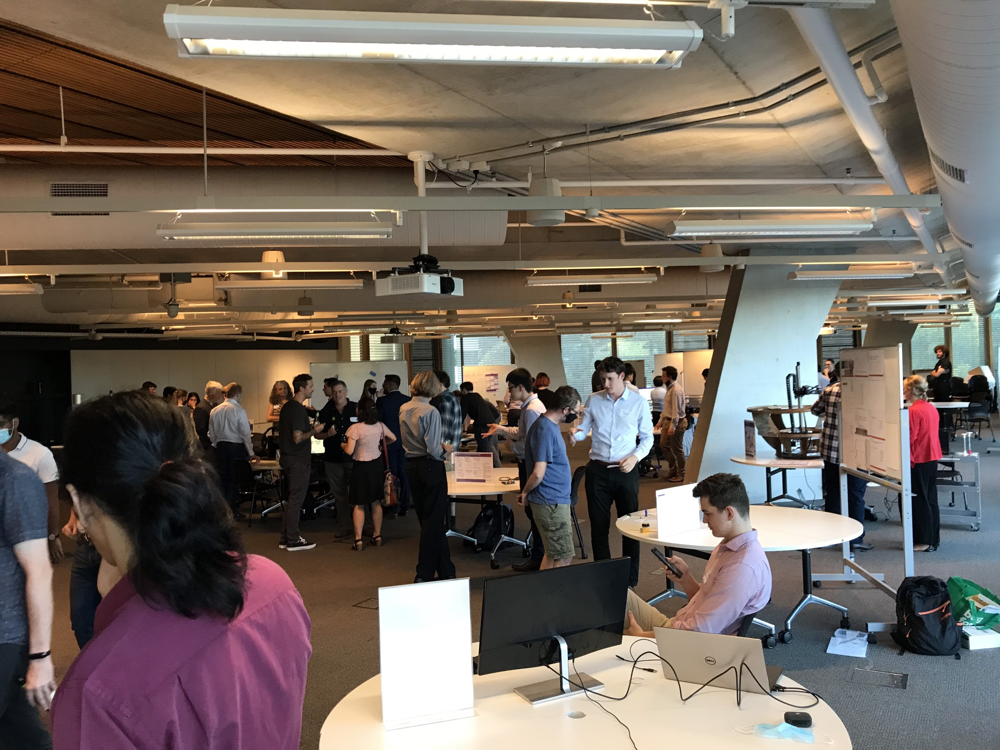

KHAI TRAN
DECO7180 - PORTFOLIO
DECO7180 - PORTFOLIO
Hi there! I am Khai, a diligent and passionate master student in Information Technology program at The University of Queensland. Becoming a Machine Learning researcher is my future career ambition. I am strong at thinking logically and solving problem indenpendently, that is why I enjoy researching solution for my own problems. Before studying the master program at UQ, I had 8-month experience working as a web developer at a start-up company in Vietnam. During my spare time, I listen to music, read news about machine learning techniques and play soccer.
Don't hestitate to contact me at tranphan.khai@gmail.com for a chat or a soccer match.
Design Inspiration
In this deliverable, each student is required to express idea of "decorating" a given dataset.
Read moreProduct Proposal
After forming a group, each group is required to propose what dataset that group uses and how the group make dataset look interesting.
Read more
Work-in-Progress Report
It's the time each group reports the final decision for product by report, presentation and parts of implemented website.
Read more
Final Delivery
Wrapping the project by a awesome tradeshow and 15-page final report.
Read moreAt the begining of the course, there are 3 criteria I proposed for this course. (1) Making a complete and interesting web-based application from a public dataset. (2) Making friends with people coming from different background and degrees such as Bachelor of IT, Master of IT, Master of Interaction Design, etc. (3) Achieving grade 7 for this course.
Throughout the course, the first expectation and second expectation has been achieved successfully while I have to wait for the third objective until December. Regarding the first objective, our product, QLD Bioseeker, was complete and far from my initial expectation. We got many good feedbacks and comments from other students and examiners.
For the second objective, my group is diverse in background, language and ages. Paul is the oldest people in the group and he is an designer. Bagus is Indonesian and is the second oldest people in the group, he works in the economic industry. Terrence (Terry) is a game designer graduate coming from Melbourne. During the group project, we worked together and overcome many issues.
However, due to the properties of the group where 3 of 4 people are main from designers and only me is a coder. Therefore, I did not have many chances to learn designing skills because I just coded for the whole group project.
Overal, the course is fun and interesting in which students collaborate and do a group project based on a practical topic but there are still somethings that make me not really enjoy the course 100%.
Personally, I found the some activities in the contact hour sessions was not really helpful for the group project. For example, the Six Hats activities is quite intuitive for my group because we organized weekly meeting and in the meeting, we also conducted the process of debating to make the website become better. Moreover, the activities during the contact hour session in week 12 will be better if it could be chaned to help the group project implementation. In the future, I hope several last weeks of the semester could be changed to the format that students can come to the classroom and student can work together with the help from tutors. It looks like a co-working space and that's quite interesting.
Another thing I want to share is the workload of the assessment. For the group project, I think the time for group project development is quite short because the design was not finalized until the week 9, meaning there are only 4 weeks left for the group project. For the assessment 3, it is quite tough to develop a website during the SWOTVAC and exam period. Therefore, I hope the assessment 1 and 3 can be integrated as one, the developing website requirement for assessment 3 is still kept but it should be specified at the beginning of the course so students can have plenty of time to doing so.
The Innovation Showcase happened on November 4th, 2021 at the Building 49 of UQ. In this event, there are a lot of projects coming from different students. These project can be thesis projects or coursework projects with varying areas: robotics, energy or user design experience. Each category is sponsored by a company or by ITEE.
In this showcase, my team project was nominated for the Best User Experience Design and for People’s Choice categories. Alongside with my project, there are 3 more team who were nominated by course coordinator. I was a main presenter and had chance to present the work to all visiors and representative of Shorthand company.
Although my group project was not a winning team, I am still happy and appreciate the chance for attending this event and demonstrating my group's final project.
Benhesed, I. (2019). Wallaby. Unsplash. Unsplash. Retrieved November 6, 2021, from https://unsplash.com/photos/8r3Gi0-MIsA.
Demak, C. (n.d.). Font Mali. Google fonts. Retrieved November 9, 2021, from https://fonts.google.com/specimen/Mali?category=Handwriting#standard-styles.
Jerrard, M. (2020). Platypus. Unsplash. Unsplash. Retrieved November 6, 2021, from https://unsplash.com/photos/Vv019m_ClpY.
JS Foundation - js.foundation. (n.d.). JQuery UI. Retrieved October 31, 2021, from https://jqueryui.com/.
Pexels. (2020). Top View of Surfer Waiting for Sea Waves to Ride. Pexels. Retrieved November 1, 2021, from https://www.pexels.com/video/top-view-of-surfer-waiting-for-sea-waves-to-ride-4782595/.
Sharon Co Images. (2020). Emu profile. Unsplash. Unsplash. Retrieved November 6, 2021, from https://unsplash.com/photos/N2j24RFyRG4.
Silber, J. (2011, October 10). Smooth scrolling when clicking an anchor link. Stack Overflow. Retrieved November 6, 2021, from https://stackoverflow.com/a/7717572.
Stoop, M. (2019). Quokka on Rottnest Island, Australia. Unsplash. Unsplash. Retrieved November 6, 2021, from https://unsplash.com/photos/Mmj9L6xnby4.
Thornton, J., & Otto, M. (n.d.). Bootstrap. Bootstrap · The most popular HTML, CSS, and JS library in the world. Retrieved October 31, 2021, from https://getbootstrap.com/.
Whitt, J. (2016). Koala. Unsplash. Unsplash. Retrieved November 6, 2021, from https://unsplash.com/photos/EerxztHCjM8.